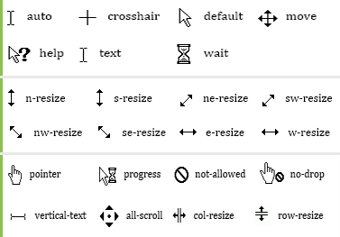

Box Model CSS
Todos los elementos de html pueden ser considerados como cajas. Las cajas están compuestas por
content, padding, border & margin. . Hablar de box model es referirse al diseño y
disposición del contenido. Cuando se le agrega altura o ancho a un div,
recae directamente sobre el tamaño del content. El orden de los valores asignados en las
propiedades es el siguiente: top, right, bottom & left. Si se especifica el valor
right pero no left, este último adquirira el mismo valor de right.
Ancho y alto total
Para calcular el ancho o alto total de un elemento será importante, sumar todos los valores
correspondientes: content, padding, border & margin
Teniendo en cuenta que para el ancho se deberá tener en cuenta los valores left & right de
el padding, border, & margin. Para la altura deberá tenerse en cuenta lo mismo con la
excepción de que en este caso los valores seran top & bottom.
Cuando se le asigna altura y ancho mediante width y height está se agregara al area del
contenido. Cuando se le aplica un color de fondo mediante la propiedad background-color
también se pintara el padding.
Nota: Si un valor negativo se le fuese agregado a margin, por ejemplo margin-bottom: -10px;
Este agregara margin a su lado contrario es decir a margin-top. También es posible especificar
un valor inferior a uno y mayor a cero sin escribir el 0 ej: .4 es igual a 0.4
box-sizing
La propiedad box-sizing puede ser usada para ajustar el siguiente comportamiento:
content-box: Es el comportamiento CSS por defecto para el tamaño de la caja (box-sizing).
Si se define el ancho de un elemento en 100 pixeles, la caja del contenido del elemento
tendrá 100 pixeles de ancho, y el ancho de cualquier borde o relleno ser añadirá al ancho final desplegado.
border-box: Le dice al navegador tomar en cuenta para cualquier valor que se especifique de borde o de relleno
para el ancho o alto de un elemento. Es decir, si se define un elemento con un ancho de 100 pixeles.
Esos 100 pixeles incluíran cualquier borde o relleno que se añadan, y la caja de contenido se encogerá para
absorber ese ancho extra. Esto típicamente hace mucho más fácil dimensionar elementos.
Propiedad border
La propiedad border permite personalizar el borde de los elementos html.
Siempre que se agregue un borde a un elemento deberá especificarse el tamaño
el estilo y el color del mismo.
Ej:
.p{
width: 11%;
border: 5px solid green;
}
Hola Mundo!
Los valores de la propiedad border también pueden insertarse de manera separada
mediante las propiedades: border-width, border-style & border-color.
Si la propiedad border-style no es agregada, ninguna de las otras tendrá efecto.
La propiedad border-style
El valor predeterminado de la propiedad border-style es none. Los valores que pueden ser
agregados a la propiedad son los siguientes.
- none: Ninguno(valor por defecto)
- dotted: Estilo punteado.
- dashed: Valor de guiones.
- double: Compuesto por dos bordes delgados.
-
groove: Un efecto 3D con iluminacion inferior derecha.
- ridge: Un efecto 3D con iluminacion superior izquierda.
- outset: Iluminacion inferior derecha
- inset: Iluminacion superior izquierda
- hidden: El borde esta escondido
La propiedad border-radius
La propiedad border-radius permite redondear las esquinas del elemento. Puede recibir 4 valores
que serán asignados a las esquinas del elemento en este orden superior izquierdo,
superior derecho, inferior derecho e inferior izquierdo. Para transformar el elemento en
un circulo el border-radius deberá ser la mitad de el ancho y altura(promedio de estos).
Ej:
.div {
border-radius: 30px 0 30px 0;
}
Hola Mundo!
bordes transparentes
Se pueden establecer trasparencia en el color del borde con la propiedad alpha con rgba.
Ej:
.div {
border: 20px solid rgba(0, 0, 0, 0.3);
}
Hola Mundo!
Propiedad outline
La propiedad CSS outline es una forma reducida para establecer una o más de las propiedades
individuales de contorno outline-style, outline-width y outline-color en una sola declaración.
En la mayoría de los casos el uso de este atajo es preferible y más conveniente.
Outline funciona igual que la propiedad border con la diferencia de que el borde generado por
outline no ocupa espacio.
Si el box-sizing esta en border box; el borde no será tenido en cuenta. El borde no es
considerado como parte de la caja.
Propiedades width and height
Las propiedades width and height pueden ser asignadas mediante porcentajes o pixeles.
Tambien pueden especificarse valores mínimos o máximos mediante las propiedades:
min-width, max-width, min-height y max-height.
Si la propiedad width está seteada al 100%(ancho total de la pantalla) y se le
asigna un máx-width de 1500px (por ejemplo), el elemento no irá a más aunque se agrande
la pantalla más alla de eso. Nota: el texto se irá acomodando en una línea si esta en más de una línea.
(Si el elemento es de bloque no hace falta setearlo).
Si hay un min-width de 300px por ejemplo y el width seteado al 100%
una vez alcanzado valores inferiores a 300px los elementos en su interior seguiran achicandose
aunque los valores sean inferiores a 300px, aunque no cambiaran su posicionamiento ni agregaran
scroll.(Si el elemento es de bloque no hace falta setearlo). En caso de que el min-width
sea superior al tamaño de la pantalla se creara scroll.
Propiedad object-fit
La propiedad CSS object-fit indica cómo el contenido de un elemento reemplazado, por ejemplo
elemento img o video, debería redimensionarse para ajustarse a su contenedor.
Valores:
-
contain
:El contenido reemplazado está dimensionado para mantener su relación de aspecto mientras
se ajusta dentro del cuadro de contenido del elemento: su tamaño de objeto concreto se
resuelve como una restricción de contenido contra el ancho y la altura utilizados del
elemento.
-
cover
:El contenido reemplazado se dimensiona para mantener su relación de aspecto mientras
llena el cuadro de contenido completo del elemento. Si la relación de aspecto del objeto
no coincide con la relación de aspecto de su caja, entonces el objeto se recortará para
que se ajuste.
-
fill
:Modifica el tamaño del elemento remplazado para llenar el cuadro de contenido.
El objeto completo ocupará todo el espacio de la caja. Si el tamaño del elemento
no concuerda con el de su caja, se estirará para llenarlo.
-
-
none
:El contenido reemplazado no se redimensiona.
-
scale-down
:El contenido se dimensiona como si none o contain estuvieran especificados,
lo que resultaría en un tamaño de objeto concreto más pequeño.
Propiedad object-position
La propiedad object-position determina el alineamiento del elemento dentro de la caja.
Valores: Este es un valor de cuatro que representa una posición en 2D con respecto a los
bordes de la caja. Posiciones Relativas o absolutas pueden presentar compensaciones.
Tenga en cuenta que la posición puede ser establecida fuera de la caja.
Pueden ir bottom, top, left & right. Tambien medidas como px, em y rem.
Puede recibir valores negativos.
Propiedad list-style-type
La propiedad list-style-type establece diferentes tipos marcadores para los items de la lista.
En el caso de las listas ordenadas pueden ser números o letras.
Valores para listas con orden:
lower-alpha : alfabetico.
Valores para listas sin orden:
none : ningún ítem.
circle : circulo.
square : cuadrado
Propiedades list-style-image & list-style-position
La propiedad list-style-image establece una imagen como márcador con el valor 'url("ruta")'.
Mientras que list-style-position especifica si el marcador estara dentro o fuera de la caja
del elemento.
Valores para position:
inside : En la misma caja que el item.
outside : Fuera de la caja del item.
La propiedad list-style
La propiedad list-style integra las 3 propiedades list-style-type, list-style-position &
list-style-image.
Ej: {list-style: square outside none;}
Propiedades de tablas
Propiedades:
Propiedades border-collapse & border-space
La propiedad border-collapse determina si los bordes de la tabla se contraen o separan
de una manera determinada. Si los borders están separados, la propiedad border-space
especifica la cantidad de espacio. El primer valor de border spacing es el separado entre
casillas horizontal en px y el segundo el separado vertical. Mientras que los valores que
pueden ser asignados a border collapse son separate,inherit & collapse
Ej:
.tab{
border-collapse: separate;
border-spacing: 20px 40px;
}
| Hola Mundo! |
Hola Mundo! |
| Hola Mundo! |
Hola Mundo! |
Propiedad caption-side
La propiedad caption especifica el lado en el cual estará el texto de la etiqueta caption
los valores que puede recibir son bottom y top.
Ej:
.tab{
border-collapse: collapse;
border-spacing: 20px 20px;
caption-side: bottom;
}
Hola Mundo!
| Hola Mundo! |
Hola Mundo! |
| Hola Mundo! |
Hola Mundo! |
Propiedad empty-cells
La propiedad empty-cells especifica si mostrar o no los bordes y el fondo de las celdas vacías.
Los valores que puede recibir son:
show: Los bordes de una celda vacía se muestran
hide: Los bordes no se muestran
Ej:
.tab{
border-collapse: collapse;
border-spacing: 20px 20px;
empty-cells: hide;
}
| Hola Mundo! |
|
| Hola Mundo! |
Hola Mundo! |
Propiedad table-layout
La propiedad table-layout especifica como sera calculado el ancho de las celdas. Si no se
establece explicitamente el valor será auto, siendo proporcional el ancho
de la celda al ancho del contenido o fixed cuando el ancho de la columna no está especificado,
el ancho del contenido no modifica el ancho de la celda.
.tab{
table-layout:fixed;
border: 1px solid grey;
border-collapse: separate;
}
| 500.000.000.000.000 |
20.000 |
Estilos de links(pseudoclases)
A diferencia de los demás elementos, los links, pueden tener estilos diferentes
dependiendo del estado en el que se encuentren. Esto se optiene con las pseudoclases.
- a:link
:Define el estilo normal de los links no visitados.
- a:visited
:Define el estilo de los links que ya fueron visitados.
- a:active
:Define el estilo cuando se hace click en ellos.
- a:hober
:Define el estilo cuando el mouse reposa sobre el elemento.
El estilo de texto sera el mismo que para text.
Reglas de orden:
a:link y a:visited deben establecerse primero que a:hover y a:hover primero que a:active.
link&visited
hover
active
Estilo de cursor
Css permite configurar el estilo mediante el cuál el cursor es mostrado. El nombre de
la propiedad empleada es cursor y los valores que se pueden asignar a la propiedad
son:
help: El cursor normal con un signo de interrogación
default: Valor por defecto, cursor normal.
crosshair: Cruz.
pointer: Mano seleccionadora.
Otros:

Propiedad box-shadow
La propiedad box-shadow aplica sombra a los elementos. El primer valor corresponde a la sombra
horizontal, en caso de ser positivo será a la derecha, si es negativo, a la izquierda.
El segundo valor corresponde a la sombra vertical, en caso de ser positivo será para la parte
inferior, si es positivo, a la parte superior. El tercer valor corresponde al color de la
sombra. El cuarto valor corresponde a la cantidad de desenfoque y el quinto valor a la
distancia de la sombra.
Para que parezca más realista mientras más lejos la sombra, más desenfoque
Ej:
.div {
box-shadow: 5px 5px 5px 5px #ff0000;
}
Hola Mundo!
Estilos de sombras
Se pueden agregar multiples sombras siempre y cuando el grupo de valores de cada sombra este
separado por una coma. Para que la sombra esté en el interior de la caja se usa el valor
inset antes de los valores numericos de la sombra. En caso de que se utilize más de
una sombra, la última especificada estará detras de las demás sombras.
Ej:
.div {
width: 200px;
height: 100px
box-shadow: inset 10px 10px 5px red, inset -10px -10px 5px red,
0 0 10px 4px #FF6347, 0 0 10px 30px #FFDAB9, 30px 0 20px 30px #B0E0E6;
}
Colores & transparencia
rgba
El parametro a define la transparencia mientras que los valores rgb siguen comportandose
de la misma manera que en rgb normal. El parametro alpha es un número entre
0.0 (total transparencia) y 1.0(opacidad total) .
Sintaxis: rgba(red, green, blue, alpha).
hsl
El valor hsl, por sus siglas(hue[tono], saturation[saturación] y lightness[luminancia]),
sirven para especificar colores de un elemento al igual los que los valores rgb, con la
diferencia de que se emplea un circulo cromatico que va desde los 0 grados(color rojo)
hasta los 360 completando la vuelta y volviendo al color rojo; correspondiendo este al
primer valor "h[tono]".
Valores de referencia "h": 0 rojo, 60 amarillo, 120 verde, 180 cyan, 240 azul & 300 magenta.
Valores "s": Varían del 0%(gris) a 100% color puro.
Valores "l": Varían desde 0%(negro, nada de luz) hasta 100%(blanco, luz maxima);
Color puro al 50%
hsla
Sintaxis 1: propiedad: hsla( h, s, l, a)
Sintaxis 2: propiedad: hsla( h s l /a)
La propiedad CSS scroll-behavior especifica el comportamiento del
desplazamiento para un elemento con desplazamiento, cuando éste se produce
debido a la navegación o a APIs CSSOM. Otros desplazamientos, p.ej.
aquellos realizados por el usuario, no se ven afectados por esta propiedad.
Cuando esta propiedad está especificada en el elemento raíz, se aplica
al viewport.
Valores:
auto
La caja de desplazamiento realiza el desplazamiento instantáneamente.
smooth
La caja se desplaza suavemente, utilizando una función de tiempo
definida por el agente de usuario (user-agent) sobre un período de
tiempo también definido por éste. Los agentes de usuario seguirán las
convenciones de su propia plataforma, en caso de que existan.
Propiedad user-selected
La propiedad CSS user-select controla si el usuario puede seleccionar el texto.
Esto no tiene ningún efecto en el contenido cargado bajo chrome, excepto en cuadros de texto.
Valores:
none:
El texto y sus sub elementos no son seleccionables. Tenga en cuenta que el objeto Selection puede contener estos elementos.
auto
El valor calculado auto se determina de la siguiente manera: En los pseudo elementos ::before y ::after, el valor calculado es none
Si el elemento es un elemento editable, el valor calculado es contain
De lo contrario, si el valor calculador de user-select en la matriz de este elemento es all, el valor calculado es all
De lo contrario, si el valor calulado de user-select en la matriz de este elemento es none, el valor calculado es none
De lo contrario, el valor calculado es text
text
El texto puede ser seleccionado por el usuario.
all
En el editor HTML, si se realiza doble-click o click-contextual en el subelemento, se seleccionará el antecesor más alto de el valor.
contain
Permite que la selección comience dentro del elemento; sin embargo, la selección estará contenida por los límites de ese elemento.